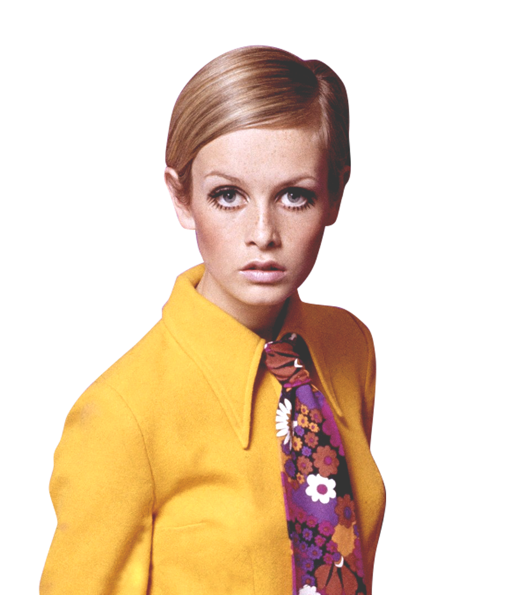
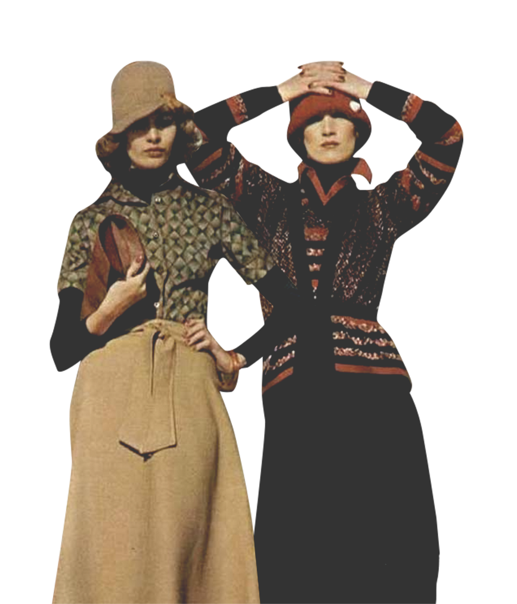

presented by
The 80s brought rockstar and pirate inspired fashion to the forefront, pushing with bright colors and eccentric textures.
The 2010's have thus far been defined by athleisure, a revival of past period pieces and alternative fashions.